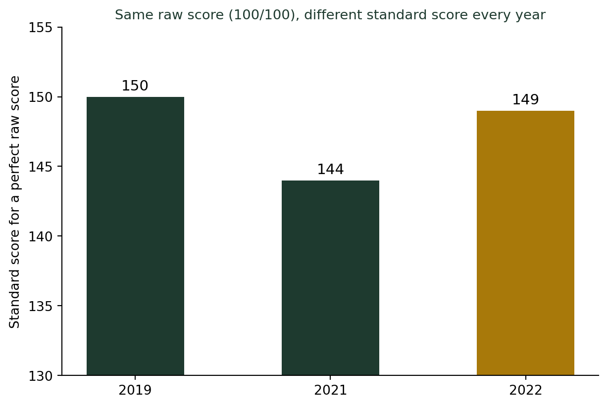
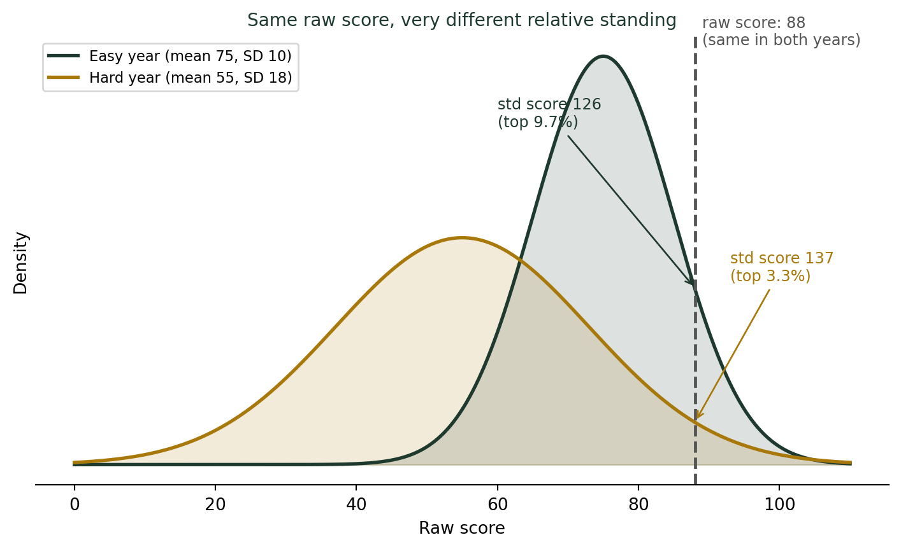

(흩어짐과 역설) 입시에서 표준점수를 쓰는 이유 — 편차값의 비밀
통계기초
기술통계
2019학년도 수능 국어 만점자의 표준점수는 150점, 2022학년도 만점자는 149점이었다. 둘 다 원점수는 100점(만점)인데 표준점수는 다르다. 그 해 시험이 얼마나 어려웠는지, 즉 평균과 표준편차가 해마다 다르기 때문이다. 어제 배운 표준편차가 어떻게 ’점수를 공정하게 비교하는 도구’로 쓰이는지 살펴본다.
똑같이 만점인데, 표준점수는 다르다
수능이 끝나면 늘 나오는 뉴스가 있다. “이번 수능 국어, 만점자 표준점수 OOO점.” 그런데 이상하지 않은가? 국어 시험은 원점수 100점이 만점이다. 만점은 어느 해든 100점으로 똑같은데, 왜 “표준점수”는 해마다 달라질까? 실제 기록을 보면 이렇다.
| 학년도 | 국어 만점자 표준점수 | 체감 난이도 |
|---|---|---|
| 2019학년도 | 150점 | 역대 최고 수준 |
| 2021학년도 | 144점 | 비교적 평이 |
| 2022학년도 | 149점 | “불수능” |
원점수는 똑같이 100점인데 표준점수가 144점에서 150점까지 오르내린다. 그 해 시험이 어려워서 평균이 낮고 점수가 넓게 흩어질수록(표준편차가 클수록), 만점의 “가치”는 더 높게 평가된다. 이 변환의 정체가 바로 어제 배운 표준편차다.
표준점수는 사실 “몇 표준편차 위에 있는가”를 보기 좋게 늘어놓은 것
한국교육과정평가원이 실제로 쓰는 국어·수학 영역 표준점수 공식은 이렇다.
\[\text{표준점수} = 20 \times \frac{\text{원점수} - \text{평균}}{\text{표준편차}} + 100\]
가운데 분수 부분, \((\text{원점수} - \text{평균})/\text{표준편차}\)가 바로 표준화 점수(z-점수)다 — 내 점수가 평균에서 표준편차 몇 개만큼 떨어져 있는지를 나타내는 수치다. 여기에 20을 곱하고 100을 더하는 건, 마이너스 부호나 소수점이 섞인 z-점수를 “평균 100, 어느 정도 퍼져 있는 점수”라는 익숙한 모양으로 보기 좋게 늘어놓은 것뿐이다.
같은 원점수 88점을 받은 두 학생을 비교해보자. 한 명은 평균 75점, 표준편차 10점인 “쉬운 해”에 시험을 봤고, 다른 한 명은 평균 55점, 표준편차 18점인 “어려운 해”에 시험을 봤다.

원점수는 똑같이 88점이지만, 쉬운 해에는 상위 9.7%(표준점수 126점), 어려운 해에는 상위 3.3%(표준점수 137점)에 해당한다. 대학이 원점수만 보고 학생을 뽑는다면, 어려운 해에 88점을 받은 학생의 진짜 실력이 과소평가된다. 표준점수는 “그 해, 그 시험 안에서 상대적으로 얼마나 잘했는가”를 담아내기 위한 장치다.
편차값의 비밀: 같은 개념, 다른 눈금
흥미롭게도 수능은 영역마다 눈금을 다르게 쓴다. 국어·수학은 “평균 100, 표준편차 20”으로 늘어놓지만(\(20z+100\)), 탐구영역·제2외국어·한문은 “평균 50, 표준편차 10”으로 늘어놓는다(\(10z+50\)). 이 “평균 50, 표준편차 10” 눈금은 일본식 입시 용어 “편차값(偏差値)”과 정확히 같은 공식이다.
편차값의 비밀
두 공식은 겉보기에 다른 점수처럼 보이지만, 사실은 똑같은 z-점수에 서로 다른 배율(20 또는 10)과 기준점(100 또는 50)을 곱하고 더한 것뿐이다. “표준점수 120점”과 “편차값 60”은 둘 다 z=1, 즉 평균보다 표준편차 1개만큼 위에 있다는 같은 뜻이다. 표준점수의 진짜 비밀은 복잡한 공식이 아니라, 어떤 눈금을 쓰든 결국은 “평균에서 표준편차 몇 개만큼 떨어져 있는가”라는 하나의 질문으로 귀결된다는 것이다.
표준점수를 읽는 법
- 표준점수가 100(또는 50)보다 높다 → 그 해 평균보다 잘 봤다는 뜻이다. 원점수가 몇 점인지는 중요하지 않다.
- 표준점수의 최고점이 해마다 다른 이유는 시험 난이도(평균·표준편차)가 다르기 때문이다. 표준점수가 높은 해라고 학생들 실력이 늘어난 게 아니라, 그 해 시험이 어려워 점수가 넓게 흩어졌다는 뜻일 때가 많다.
- 원점수만으로 다른 과목·다른 해의 성적을 비교하면 안 된다. 표준점수는 바로 이 비교 불가능성을 해결하기 위해 만들어졌다.
더 깊이: 표준화의 원리, \(Z = (X-\mu)/\sigma\)
강의노트 〈수리통계학 3. 유명분포 — 정규분포〉는 \(X \sim N(\mu, \sigma^2)\)를 따르는 확률변수에 대해 \(Z = (X-\mu)/\sigma\)로 변환하면 항상 표준정규분포 \(N(0,1)\)을 따른다고 정리한다. 원래 분포가 무엇이든(국어 100점 만점이든, 수학 만점이든), 평균을 빼고 표준편차로 나누는 이 한 번의 변환으로 서로 다른 두 시험 결과를 같은 저울 위에 올릴 수 있다. 수능의 표준점수 공식 \(20Z+100\)은 이 이론적 \(Z\)에 시험 주관사가 보기 편한 배율과 기준점을 씌운 것에 지나지 않는다.
결론: 원점수는 “얼마나 맞혔는가”, 표준점수는 “얼마나 잘했는가”
나는 수능 채점 결과가 발표되는 매년 12월, 학생들에게 이 표를 보여주며 묻는다. “100점 만점을 받은 두 사람 중 누가 더 대단한 걸까요?” 답은 원점수만으로는 알 수 없다. 그 해 평균과 표준편차를 알아야, 즉 그 100점이 얼마나 드문 성취였는지를 알아야 답할 수 있다. 어제 표준편차가 “보통의 폭”을 재는 도구였다면, 오늘 표준점수는 그 폭을 이용해 서로 다른 잣대로 잰 점수들을 하나의 공정한 저울 위에 올려놓는 도구다.
참고 자료
- 역대급 ‘불수능’ 사실로…국어 표점 149, 수학 147 — 파이낸셜뉴스
- 한국교육과정평가원, 수능 표준점수 산출 공식(국어·수학: \(20Z+100\), 탐구/제2외국어·한문: \(10Z+50\))